Billing for small Indian restaurants, designed for the counter.
An offline-first Android billing app that runs on the phone a restaurant already owns and prints to a cheap Bluetooth printer. I designed it from idea to a working, installed app, then built the brand and launch kit around it.
galla is the Hindi word for a shop's cash box: the drawer every shopkeeper guards.
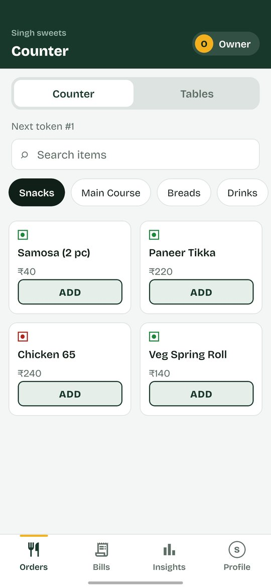
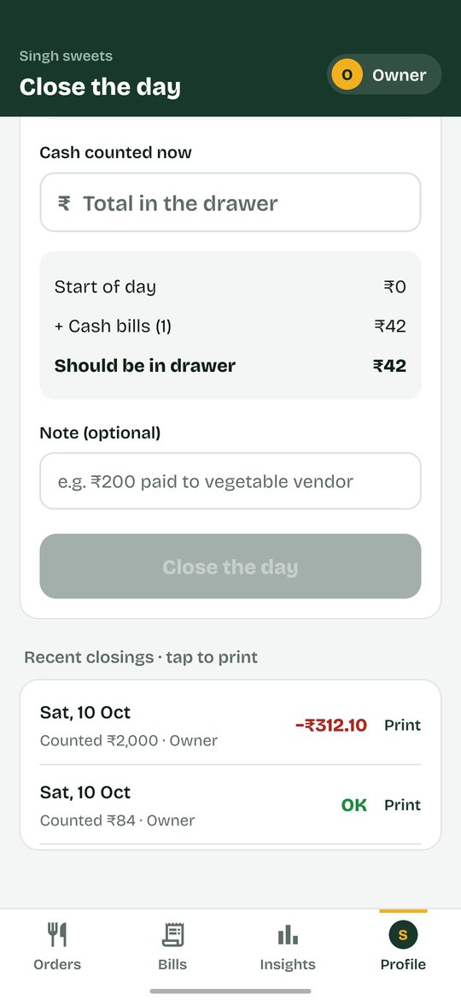
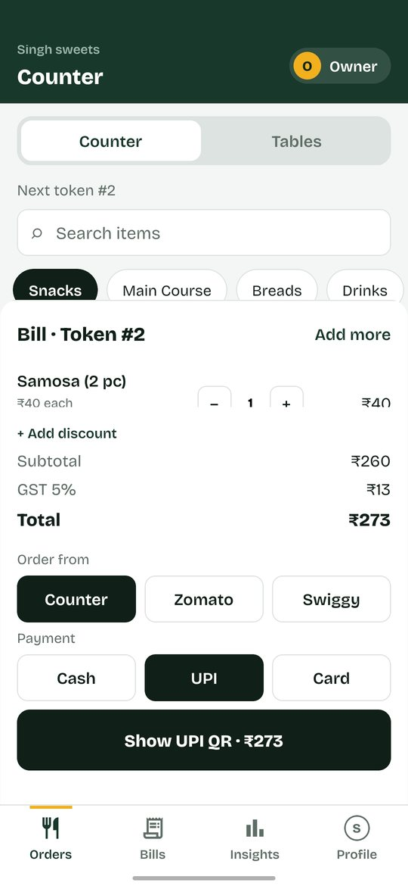
Popular restaurant systems are built for bigger outlets, with yearly contracts and their own hardware. A dosa counter, a cafe or a family dine-in needs something simpler.
Several thousand rupees a year for software, plus add-ons and dedicated hardware.
Cash goes missing between billing and closing, hidden behind discounts and cancelled bills.
The connection drops in the lunch rush, and cloud-only billing stops.
Staff find dense screens slow and confusing, so they fall back to paper.
Invoices need running numbers, CGST and SGST, and delivery orders follow different rules.
The CA asks for GST numbers, and the owner hands over a bag of bills.
Lowest cost to start, no new hardware beyond a cheap printer, offline by design, and protection against cash leakage from day one.
Inventory, recipes, loyalty and online ordering. Big systems do these well. A small counter needs fast, honest billing first.
Speed for the cashier, control for the owner. Their needs pull in different directions, so every screen respects who is using it.
Not at the shop every hour. Approves discounts, sees the expected cash and hands clean files to the CA.
Handles tables and rush hour, can approve a discount and closes the day when the owner is away.
Bills all day. Gets big buttons and plain words, and counts the drawer without seeing the target.
Each decision comes from one of the principles every screen had to pass.
Every bill is saved in an encrypted database on the phone. Billing never waits for a network.
Trade-off: no live multi-phone sync in version one; backups are a file the owner shares.
Cashiers count the drawer without seeing the expected total. Owners and managers see it.
Why: if the target is visible, a short drawer gets "found" money. Blind counts keep the number honest.
Cancelled bills stay visible, struck through, with who cancelled and why. Discounts need an owner or manager PIN.
Why: deletion is how leakage hides. A record that can't disappear also protects honest staff.
Orders, Bills, Insights, Profile. Everything else lives in Profile, grouped by when you need it.
Trade-off: owner-only tools sit one level deeper, which keeps the cashier's view clean.
Receipts print amounts as Rs, 32 characters a line.
Why: many cheap thermal printers can't print the ₹ sign. Designing for the real printer beat designing for the mockup.
Real screens from the working app, in three parts of a restaurant's day. Scroll each row sideways. The sample shop and its numbers are test data.
From install to the first bill in a few short steps.
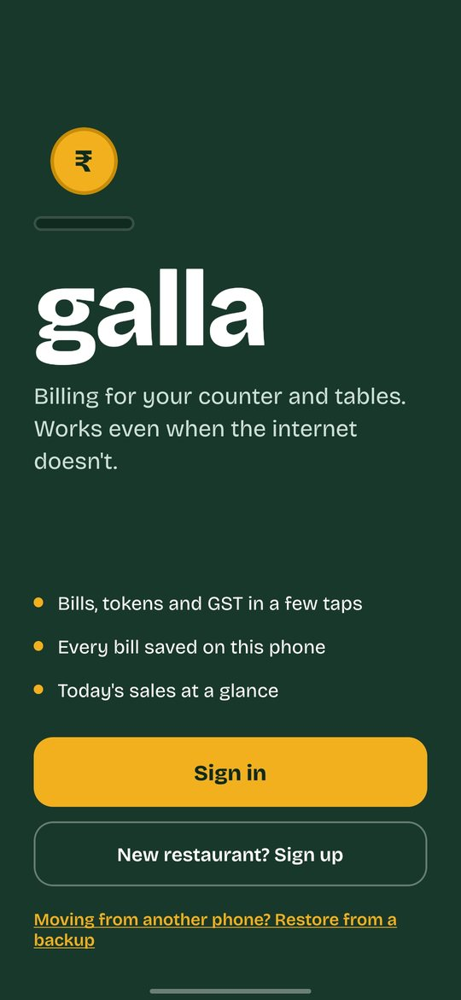
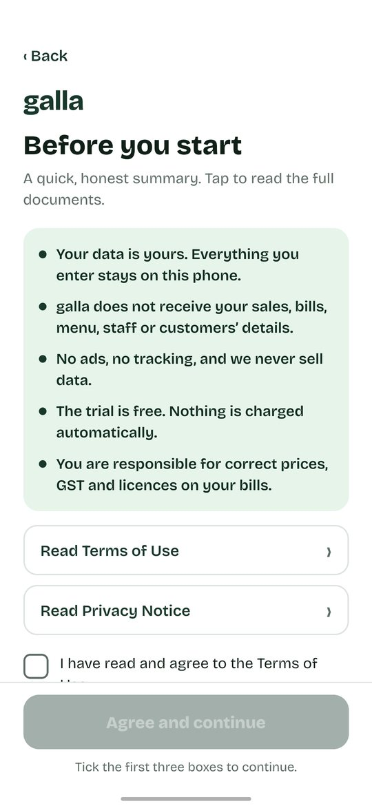
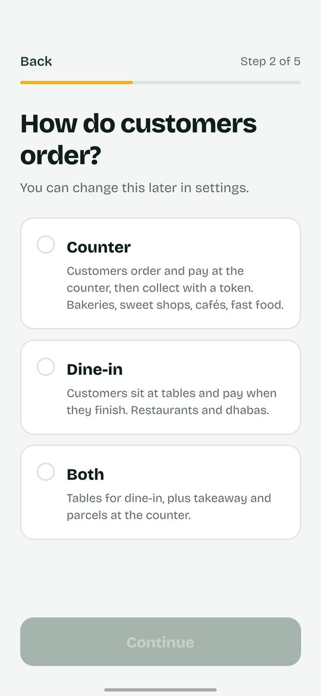
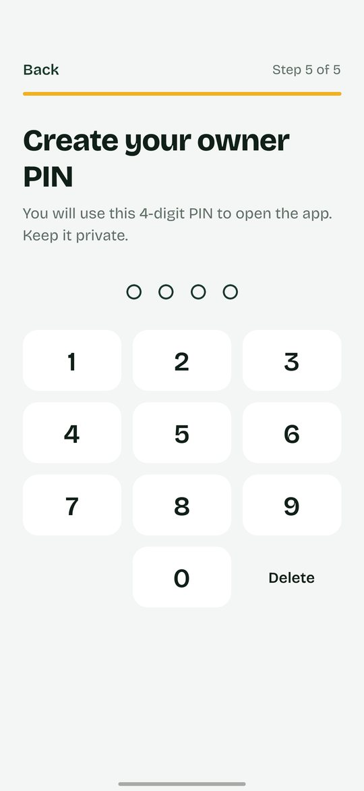
Fast enough for a lunch-hour queue.
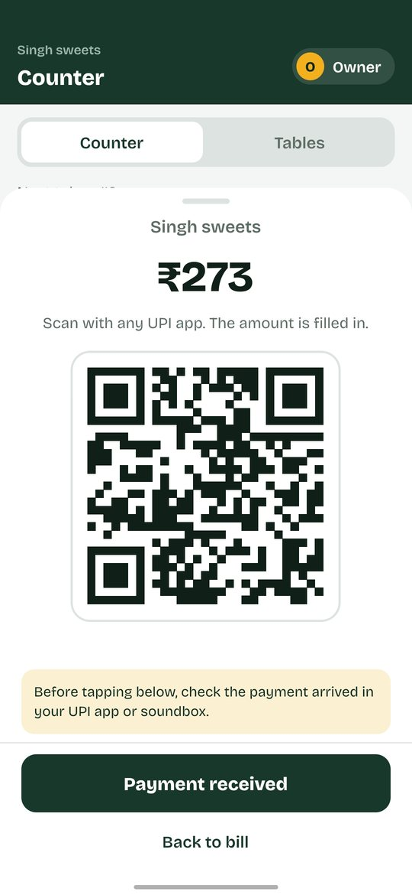
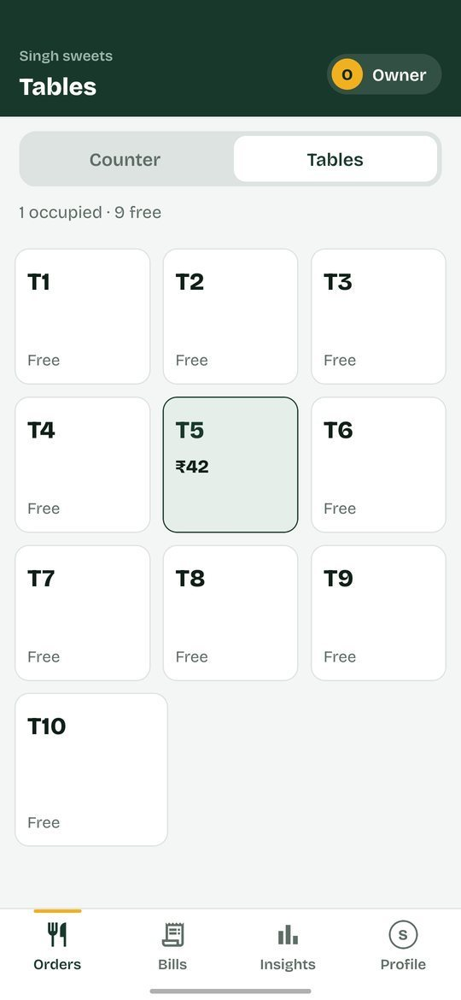
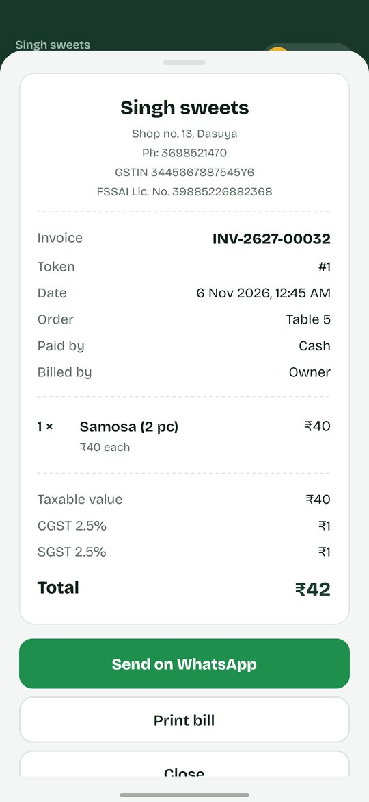
Tools for the owner, without the clutter.
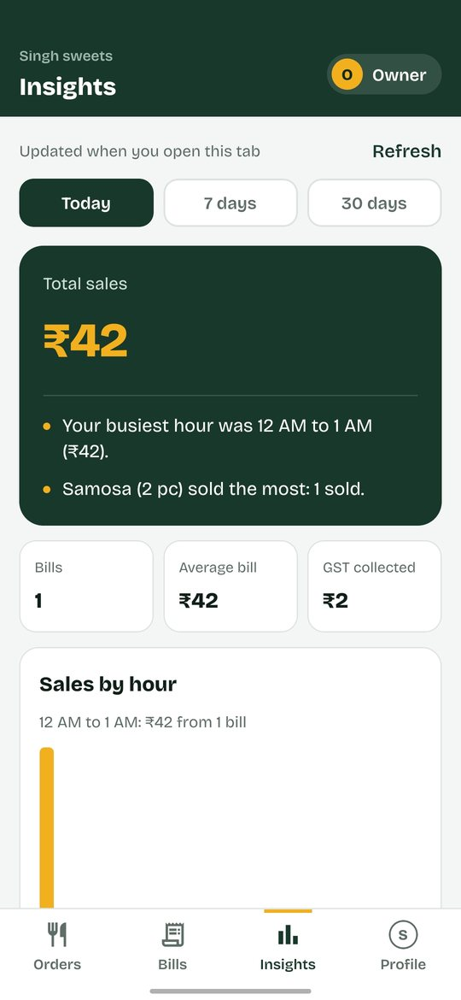
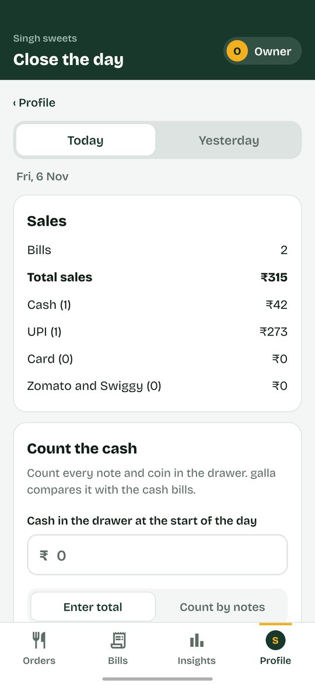
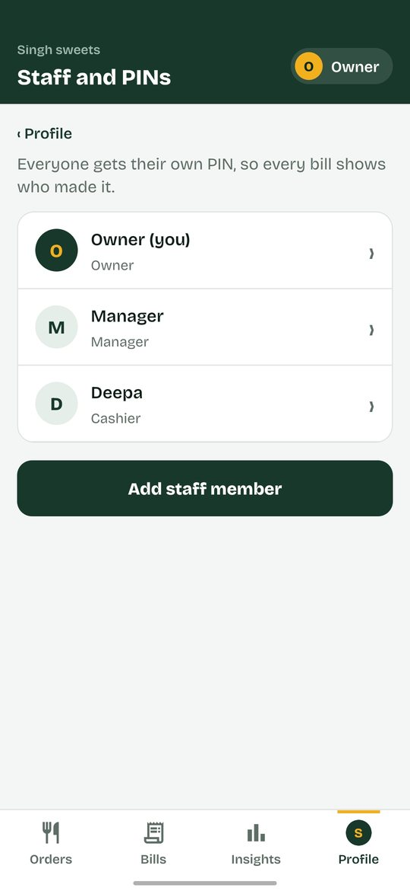
Short reels for Instagram and a four-page brochure for restaurant owners.
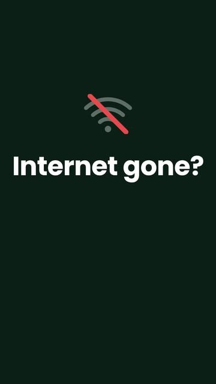
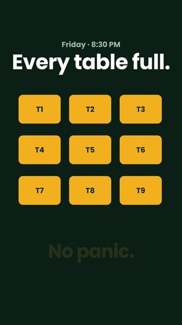
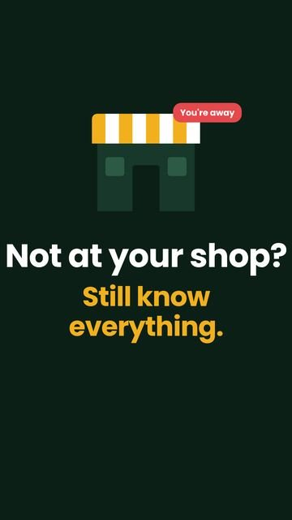
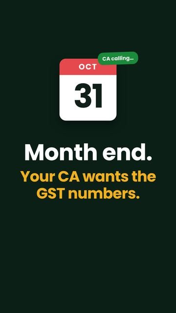
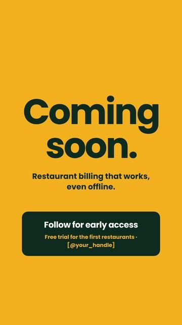
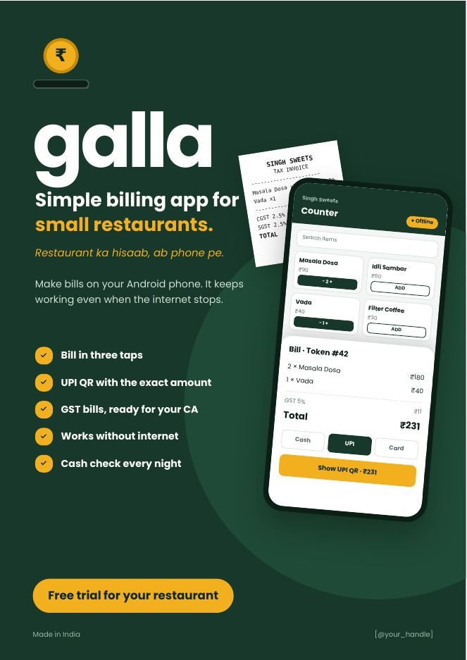
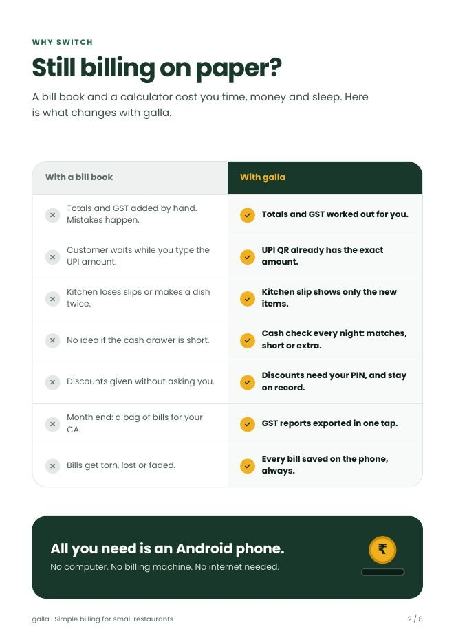
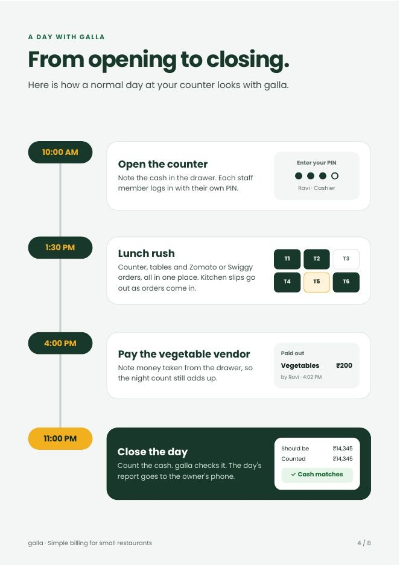
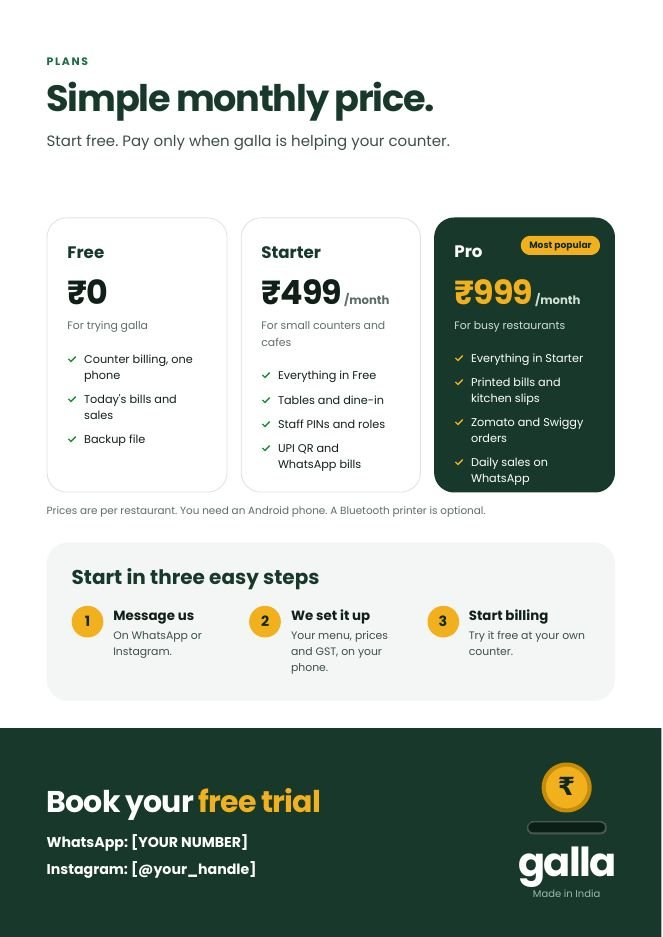
The hardest problems weren't layout. They were trust: who can give a discount, who sees the expected cash, what can never be deleted.
A ₹ sign that looks perfect on screen prints as junk on a thermal printer. Testing on real hardware changed decisions I thought were final.
"Save on the phone first" decided backups, multi-restaurant support, encryption and the future cloud plan.
Time a cashier billing during a lunch-hour queue, and find where taps slow down.
Do cashiers feel accused, or protected? Talk to them after a week of closings.
Compare the CA handover with the old bag of paper bills.
Next case study: Memory, in your control